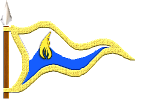
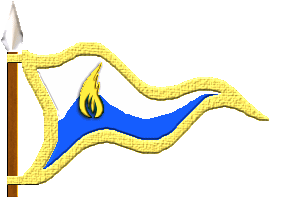

| Übersicht,
Anschläge und Stammtisch (RPG) |
|
6. Segelregatta
|
Olivia v. glänzenen Wolfstern
  |
tolle Veranstaltung,
dickes Lob und Dank an die Organisatoren
Weise Olivia v. glänzenen Wolfstern,
Vorsteherin von Wolfsstern,
Ehefrau des ehrenwerten Elrohir v. glänzenen Wolfstern,
Feuerwölfin der Nation
Zur 7. Stunde am 85.Erntemond im Jahre 448 |
27.11.11 21:55
 |
|
| Chevonne Siobhan (RIP) |
Ich schließe mich in jeder Hinsicht meinen Vorrednern an.
Baronesse Chevonne Siobhan,
Vorsteherin von Sigil,
Anführerin der glorreichen Nation "Orden der Sinne"
Zur 9. Stunde am 85.Erntemond im Jahre 448 |
27.11.11 22:16
|
|
| Altan Stormwind (RIP) |
Wir danken auch den Organisatoren für diese gelungene Veranstaltung
Herzog Altan Stormwind,
Vorsteher von Soteria,
Anführer der glorreichen Nation "Legion des Frostes",
Ehemann der reizenden Paule Knip
Zur 9. Stunde am 85.Erntemond im Jahre 448 |
27.11.11 22:25
|
|
Lyra Callionymus
   |
Wer hat denn gewonnen?
Lady Lyra Callionymus,
Vorsteherin von Atlantis,
Anführerin der glorreichen Nation "Freie Walfänger",
Siegerin im Steinekullern 440 und 444
Zur 10. Stunde am 85.Erntemond im Jahre 448 |
27.11.11 22:34
|
|
Elániel Vanyië
  |
*schlägt einen Zettel mit den Reihungen an*
1. Platz
Team "Hals-Abschneider"
Kapitän: Silencio
Crew: Ateara Tinuhin, Zipfelmütz von Dahén und (im Beiboot hinterhergezogen) Manjana Cane
2. Platz
Team "Hannibal"
Kapitän: Altan Stormwind
Crew: Sin Mortiarea und Tar Aldarion
3. Platz
Team "Team Tacheless"
Kapitän: Cadacan von Tacheless
Crew: Morgaine von Tacheless und Cadiramos S. Cobar
4. Platz
Team "Filzpiepen"
Kapitän: Rabenklaue
Crew: Galaton Dragus und Utkorg vant Leefdaalhof
5. Platz
Team "Orden der sinnlichen Nachtreiter und Schmetterlinge"
Kapitän: Chevonne Siobhan
Crew: Chihiro Takeshi und Sionnach Arolis Amaorla
6. Platz
Team "Loup de Mar"
Kapitän: Elrohir v. glänzenen Wolfstern
Crew: Olivia und Wollium v. glänzenen Wolfstern
7. Platz
Team "Hand des Meeres"
Kapitän: Rey ad Argos
Crew: Kydaoye ad Argos
8. Platz
Team "Jerelyrawolf"
Kapitän: Lyra Callionymus
Crew: Jeremias Saimerej und Wolf ni Volon
Ich bedanke mich für die rege Teilnahme, hoffe es hat Spaß gemacht und würde mich freuen, die Teams bei der nächsten Regatta wie auch neue Crews am Start begrüßen zu dürfen.
Außerdem möchte ich mich bei allen Streckenposten bedanken, die mir bei der Austragung geholfen haben: Livia Dowan-Tan, Marea und Shâna Carnesîr wie auch Bluemchen und Yedlik san Dale.
Hohepriesterin Ella von Dahén,
Vorsteherin von Neo Fendrakan,
Hohepriesterin im Dienste des einzig wahren Glaubens an Wendaria,
Anführerin der glorreichen Nation "Freie Siedler von Thuatail"
Zur 12. Stunde am 85.Erntemond im Jahre 448 |
27.11.11 23:01
|
|
| Rey ad Argos (RIP) |
Vielen Dank hat Spaß gemacht :)
Sir Rey ad Argos,
Vorsteher von Argolis ad Argos,
Verlobter des ehrenwerten Kydaoye
Zur 10. Stunde am 2.Dunkelfrost im Jahre 448 |
29.11.11 13:54
|
|
Silencio
  |
Das kann ich nur bekräftigrn - auch vom meinem ganzen Team der "Hals-Abschneider" nochmal Dank an alle Beteiligten der Organisation und Streckenposten!
...und Cadacan werde ich für seine Herz aus Gold mal ein neues Segel spenden...Wer weiß, vielleicht hat er auch nur sein Handtuch verloren!
Übrigens kommt der Titel des Teams nicht von rummeuchelnden Schergen die eine Guillotine ihren Richter nennen, sondern von erfahrenen Seglern, die es verstehen die gefährlichen Halsen perfekt zu beherrschen und geschickt abzuschneiden.
Pfalzgraf Silencio,
Vorsteher von Excubitor Merdies,
Verlobter der reizenden Consuela,
Siegerteam der 6. Segelregatta
Zur 22. Stunde am 3.Dunkelfrost im Jahre 448 |
29.11.11 22:16
|
|
Chihiro Takeshi
  |
Vielen Dank an die Organisatoren. Es war aufregend und sehr spannend. Auch vielen Dank für die "Namensurkunde für Schiffe", die plötzlich nach der Veranstaltung in meinem Rucksack aufgetaucht ist.
Lady Chihiro Takeshi,
Vorsteherin von Cho no Shi,
Anführerin der glorreichen Nation "Cho no shimai",
Arthwrfutta,
Ehefrau des ehrenwerten Arthwr Dyddplentyn
Zur 15. Stunde am 9.Dunkelfrost im Jahre 448 |
01.12.11 6:09
|
|
wollium v. glänzenen wolfstern
 |
Auch von mir einen herzlichen Dank für die tolle Organisation und ich hoffe das wir das nächste mal genauso viel Spass haben, aber mit einem besseren platz abschneiden
Hohepriester wollium v. glänzenen wolfstern,
Vorsteher von Wolfsglut,
Hohepriester im Dienste des einzig wahren Glaubens an Tura,
Lichtwolf der Nation
Verkünder des Glaubens an Tura
Zur 17. Stunde am 9.Dunkelfrost im Jahre 448 |
01.12.11 6:45
|
|
| Altan Stormwind (RIP) |
Was wir noch spannend fänden wären die unterschiedlichen Durchlaufszeiten bei den Stationen, da wir doch erhebliche Probleme mit der ersten Station hatten und viele Segel an uns vorbei flogen und trotzdem noch auf dem zweiten Platz gelandet sind.
Herzog Altan Stormwind,
Vorsteher von Soteria,
Anführer der glorreichen Nation "Legion des Frostes",
Ehemann der reizenden Paule Knip,
Zweitplatziertes Team der 6. Segelregatta
Zur 19. Stunde am 9.Dunkelfrost im Jahre 448 |
01.12.11 7:00
|
|
| Chevonne Siobhan (RIP) |
Weil ich zum Beispiel zu blöde war, um die Sonnensteppe herum zu segeln. Ich habe eher eine schöne Küstenkreuzfahrt gemacht. *grummel*
Baronesse Chevonne Siobhan,
Vorsteherin von Sigil,
Anführerin der glorreichen Nation "Orden der Sinne"
Zur 8. Stunde am 10.Dunkelfrost im Jahre 448 |
01.12.11 10:08
|
|
Arthwr Dyddplentyn
 |
*studiert die Platzierungen,schüttelt den Kopf seufzend und hinterläßt eine hingekritzelte Nachricht:*
Hm,musse Team sinnli Reita in Nacht un Schmettaling meer Klaps auf Hinter geb,bevor lossegel...so nachste Mal vil schnella!
Un villeich so komm endli Pokal in schone Regal was i gebau.Oda bei nachste Mal selba mitmach un Wassahaus ruda wenn kei Wind...
Priester Arthwr Dyddplentyn,
Priester im Dienste des einzig wahren Glaubens an Urvan,
Ehemann der reizenden Chihiro Takeshi,
Kuchemampf- un Birtrinkgroßmeista
Zur 10. Stunde am 11.Dunkelfrost im Jahre 448 |
01.12.11 16:10
|
|
Elániel Vanyië
|
Auf vielfachen Wunsch veröffentliche ich die Reihenfolgen des Eintreffens bei den jeweiligen Zwischenstationen.
Lois Thuatail - Start Streckenposten: Ella von Dahén
((20:32:25)) Team "Filzpiepen"
((20:32:26)) Team "Jerelyrawolf"
((20:32:26)) Team "Loup de Mar"
((20:32:27)) Team "Team Tacheless"
((20:32:27)) Team "Hals-Abschneider"
((20:32:27)) Team "Hannibal"
((20:32:28)) Team "Orden der sinnlichen Nachtreiter und Schmetterlinge"
((20:32:28)) Team "Hand des Meeres"
Sanryati Streckenposten: Livia Dowan-Tan
((20:35:00)) Team "Hannibal"
((20:35:30)) Team "Hand des Meeres"
((20:35:43)) Team "Filzpiepen"
((20:35:55)) Team "Team Tacheless"
((20:37:28)) Team "Orden der sinnlichen Nachtreiter und Schmetterlinge"
((20:37:30)) Team "Loup de Mar"
((20:37:35)) Team "Hals-Abschneider"
((20:38:27)) Team "Jerelyrawolf"
Catan Streckenposten: Yedlik san Dale
((20:37:14)) Team "Hannibal"
((20:38:31)) Team "Filzpiepen"
((20:41:17)) Team "Hals-Abschneider"
((20:43:03)) Team "Hand des Meeres"
((20:44:43)) Team "Orden der sinnlichen Nachtreiter und Schmetterlinge"
((20:46:13)) Team "Loup de Mar"
Mitglieder des Teams "Jerelyrawolf" wurden vom Streckenposten gesichtet. Der Goldstückübergeber aus dem "Team Tacheless" hat vor lauter Eile, wie auch wohl beim Team "Jerelyrawolf" passiert ist, das Goldstück fallen gelassen , aber anhand der Meldung der Geschichtswichtel "((27.11.2011 20:42)) SIEG Cadiramos S. Cobar hat zum ersten mal Bergtroll besiegt!" ist der Aufenthalt im Dungeon belegt.
Kyll Streckenposten: Bluemchen
((20:50:53)) Team "Team Tacheless"
((20:52:45)) Team "Hals-Abschneider"
((20:54:52)) Team "Filzpiepen"
((20:56:59)) Team "Hannibal"
((21:05:09)) Team "Orden der sinnlichen Nachtreiter und Schmetterlinge"
((21:05:15)) Team "Hand des Meeres"
((21:05:19)) Team "Orden der sinnlichen Nachtreiter und Schmetterlinge"
((21:08:40)) Team "Loup de Mar"
((21:14:57)) Team "Jerelyrawolf"
Trithales Streckenposten: Shâna Carnesîr
((20:57:54)) Team "Team Tacheless"
((20:58:50)) Team "Hals-Abschneider"
((21:03:19)) Team "Hannibal"
((21:05:21)) Team "Filzpiepen"
((21:13:59)) Team "Orden der sinnlichen Nachtreiter und Schmetterlinge"
((21:17:33)) Team "Hand des Meeres"
((21:18:29)) Team "Loup de Mar"
((21:30:39)) Team "Jerelyrawolf"
Cap Puccino Streckenposten: Marea
((21:03:34)) Team "Hals-Abschneider"
((21:04:14)) Team "Team Tacheless"
((21:06:56)) Team "Hannibal"
((21:09:59)) Team "Filzpiepen"
((21:22:48)) Team "Orden der sinnlichen Nachtreiter und Schmetterlinge"
((21:24:59)) Team "Loup de Mar"
((21:25:44)) Team "Hand des Meeres"
((22:13:06)) Team "Jerelyrawolf"
Solitaria Streckenposten: Livia Dowan-Tan
((21:07:27)) Team "Team Tacheless"
((21:07:31)) Team "Hals-Abschneider"
((21:09:28)) Team "Hannibal"
((21:13:10)) Team "Filzpiepen"
((21:27:19)) Team "Orden der sinnlichen Nachtreiter und Schmetterlinge"
((21:29:37)) Team "Loup de Mar"
((21:34:01)) Team "Hand des Meeres"
((22:20:40)) Team "Jerelyrawolf"
Neo Fendrakan - Ziel Streckenposten: Ella von Dahén
((21:11:59)) Team "Hals-Abschneider"
((21:14:21)) Team "Hannibal"
((21:15:10)) Team "Team Tacheless"
((21:17:00)) Team "Filzpiepen"
((21:33:56)) Team "Orden der sinnlichen Nachtreiter und Schmetterlinge"
((21:40:59)) Team "Loup de Mar"
((21:45:19)) Team "Hand des Meeres"
((22:29:58)) Team "Jerelyrawolf"
Hohepriesterin Ella von Dahén,
Vorsteherin von Neo Fendrakan,
Hohepriesterin im Dienste des einzig wahren Glaubens an Wendaria,
Anführerin der glorreichen Nation "Freie Siedler von Thuatail"
Zur 14. Stunde am 24.Dunkelfrost im Jahre 448 |
04.12.11 18:01
|
|
Lyra Callionymus
|
Ui, trotz meinem Gasthausbesuch wegen der Krake und dem Abstecher zu den Walfischen und unserer gemütlichen Plauderei ob der verlorenen Regatta waren die Ersten ab Cap Puccino gerade mal 8 Minuten schneller als wir.
Schade das mein Schiff in Trithales kaputt war und das wir Wolf auf Kyll vergessen hatten. Da war für uns die Regatta schon gelaufen, bevor sie richtig begonnen hatte.
Lady Lyra Callionymus,
Vorsteherin von Atlantis,
Anführerin der glorreichen Nation "Freie Walfänger",
Siegerin im Steinekullern 440 und 444
Zur 16. Stunde am 24.Dunkelfrost im Jahre 448 |
04.12.11 18:30
|
|
Galaton Dragus
  |
FLITZPIEPEN...verdammt! *grummelt* Und Team Lug und Trugless nur mit 2 zugekniffenen Augen weiter, aber was solls, nächstes Jahr nehm ich meine Peitsche mit, damit das Team besser spurt, dann zeigen wirs allen. Ansonsten nette Veranstaltung, einige Gesichter schon lange nicht mehr so lange lebendig vor mir stehen gesehen! ...*weitergrummelt*
Graf Galaton Dragus,
Vorsteher von Kristallhafen,
Ehemann der reizenden Tonja Dragus
Zur 24. Stunde am 24.Dunkelfrost im Jahre 448 |
04.12.11 20:22
|
|
| Marea (RIP) |
lyra das waren leider keine 8 minuten, sondern 1 stunde und 8 minuten
Pfalzgräfin Marea,
Vorsteherin von Dîn Elenath,
Anführerin der glorreichen Nation "Volk von Alandur",
Ehefrau des ehrenwerten Merrik Mercadur
Zur 19. Stunde am 25.Dunkelfrost im Jahre 448 |
05.12.11 0:47
|
|
Elániel Vanyië
|
Ja huch.. Entschuldigt vielmals, werter Graf. Einmal falsch aufgeschrieben und schon hat es sich eingeprägt.
Man kann mir sicherlich zuviel Gutmütigkeit und wenig Strenge vorwerfen. Vielleicht sollte man abgesehen von der Peitsche auch für vollere Bäuche sorgen. Dann stünde Eurer Crew sicher nichts mehr im Weg. *schmunzelt leicht*
Hohepriesterin Ella von Dahén,
Vorsteherin von Neo Fendrakan,
Hohepriesterin im Dienste des einzig wahren Glaubens an Wendaria,
Anführerin der glorreichen Nation "Freie Siedler von Thuatail"
Zur 20. Stunde am 25.Dunkelfrost im Jahre 448 |
05.12.11 0:51
|
|
Lyra Callionymus
|
Marea das waren exakt 8 Minuten,
Team Halsabschneider war 21:03:34 in Cappu und um 21:11:54 im Ziel, das sind acht Minuten und wir waren 22:13:o6 auf Cappu und 22:29:58 im Ziel, das sind 16 Minuten.
16 minus 8 sind 8 oder etwa nicht?
Lady Lyra Callionymus,
Vorsteherin von Atlantis,
Anführerin der glorreichen Nation "Freie Walfänger",
Siegerin im Steinekullern 440 und 444
Zur 15. Stunde am 26.Dunkelfrost im Jahre 448 |
05.12.11 5:26
|
|
| Chevonne Siobhan (RIP) |
Wie jetzt? Regelverstösse ziehen keine Disqualifizierung nach sich? Das wirft jetzt aber kein gutes Licht auf die Rennleitung.
Baronesse Chevonne Siobhan,
Vorsteherin von Sigil,
Anführerin der glorreichen Nation "Orden der Sinne"
Zur 10. Stunde am 27.Dunkelfrost im Jahre 448 |
05.12.11 9:51
|
|
Lyra Callionymus
|
Warum wollt ihr immer gleich, das alle qualifiziert werden, werte Baronesse?
Lady Lyra Callionymus,
Vorsteherin von Atlantis,
Anführerin der glorreichen Nation "Freie Walfänger",
Siegerin im Steinekullern 440 und 444
Zur 1. Stunde am 29.Dunkelfrost im Jahre 448 |
05.12.11 18:56
|
|
Ferret
  |
"Der Goldstückübergeber aus dem "Team Tacheless" hat vor lauter Eile, wie auch wohl beim Team "Jerelyrawolf" passiert ist, das Goldstück fallen gelassen , aber anhand der Meldung der Geschichtswichtel "((27.11.2011 20:42)) SIEG Cadiramos S. Cobar hat zum ersten mal Bergtroll besiegt!" ist der Aufenthalt im Dungeon belegt."
Ich persönlich denke, dass die Tacheless einfach nur geizig sind.
Ferret,
Anführer der glorreichen Nation "Ritter Lothiens"
Zur 19. Stunde am 29.Dunkelfrost im Jahre 448 |
05.12.11 23:06
|
|
| Chevonne Siobhan (RIP) |
Wo steht, dass ich das will, werte Lady?
Baronesse Chevonne Siobhan,
Vorsteherin von Sigil,
Anführerin der glorreichen Nation "Orden der Sinne"
Zur 19. Stunde am 29.Dunkelfrost im Jahre 448 |
05.12.11 23:13
|
|
Lyra Callionymus
|
War wohl ein Trugschluss.
Lady Lyra Callionymus,
Vorsteherin von Atlantis,
Anführerin der glorreichen Nation "Freie Walfänger",
Siegerin im Steinekullern 440 und 444
Zur 4. Stunde am 50.Dunkelfrost im Jahre 448 |
10.12.11 17:16
|
|
Übersicht,
Anschläge und Stammtisch (RPG)
|